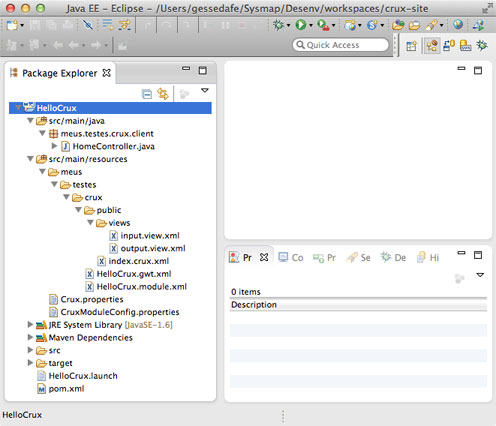
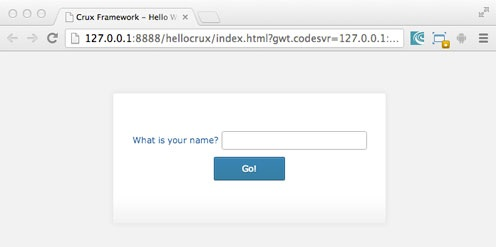

Crux Framework 5 Manual
2013
- 1. Introdução
- 2. Quick Start
- 3. Instalação e Configuração
- 4. Visão Arquitetura
- 5. Camada de Visão
- 6. Camada de Controle
- 7. Camada de Modelo
- 8. Utils
- 9. Ferramentas do Crux
- 10. Archetypes
- 11. Componentes Crux
- Glossary
- A. Biblioteca de Componentes
- 1.1. index.crux.xml
- 1.2. main.view.xml
- 1.3. MainController.java
- 3.1. web.xml
- 3.2. web.xml
- 3.3. web.xml
- 3.4. web.xml
- 3.5. web.xml
- 3.6. web.xml
- 3.7. web.xml
- 3.8. Crux.properties
- 3.9. CruxModuleConfig.properties
- 3.10. app.launcher
- 3.11. build.xml : CruxCompiler
- 3.12. build.xml : ServiceMapper
- 5.1. namespaces
- 5.2. index.crux.xml
- 5.3. mainhello.view.xml
- 5.4. HelloController.java : sayHello
- 5.5. userinfo.template.xml
- 5.6. index.crux.xml - versão 2
- 5.7. userinfo.template.xml - versão 2
- 5.8. index.crux.xml - versão 3
- 5.9. entrytextbox.template.xml
- 5.10. textbox.view.xml
- 5.11. pagelayout.template.xml
- 5.12. index.crux.xml
- 6.1. Definindo uma
Controller - 6.2. Métodos em uma
Controller - 6.3. Injeção de valores na
Controller - 6.4. Propriedades injetadas pelo container IoC
- 6.5. Escopo dos objetos junto ao container IoC
- 6.6. Sub-escopo para objetos junto ao container IoC
- 6.7. Configuração do Container IoC
- 6.8. Definição de um provider para o Container IoC
- 6.9. ControllerValidation.java
- 6.10. ControllerValidation.java
- 6.11. GreetingService.java
- 6.12. GreetingServiceAsync.java
- 6.13. MyController.java
- 6.14. MyRestService.java
- 6.15. MyRestClient.java
- 6.16. MyController.java
Chapter 1. Introdução
1.1. O que é o Crux?
O Crux é um framework para desenvolvimento de aplicações web que necessitem de um desempenho superior, altíssima escalabilidade e suporte para múltiplos dispositivos, como desktops, tables, smartphones e TVs. Ele foi projetado para tirar proveito da velocidade e da facilidade do desenvolvimento de aplicações corporativas utilizando HTML 5, sendo um verdadeiro framework para Web 2.0.
Neste manual é descrito como usar o Crux Framework através de exemplos que ilustram os recursos disponíveis no framework. Assim será possível entender os conceitos aplicados no Crux e como explorar o framework da melhor forma. O Crux foi construído sobre o Google Web Toolkit (GWT). Consulte a documentação do GWT caso não esteja familiarizado com o seu uso.
Para esta documentação assume-se que os seguintes softwares já estão devidamente instalados e configurados:
-
O Java SE Development Kit (JDK), versão 1.6 ou superior
-
O Eclipse IDE
Para ver a aplicação dos recursos do Crux Framework viste a pagina do Showcase 5.
1.2. Crux Artefatos e Projetos
A distribuição do Crux inclui o seguinte conjunto de arquivos jar:
-
crux-runtime.jar - O jar de execução do Crux framework.
-
crux-dev.jar - Ferramentas do Crux para desenvolvimento.
-
crux-themes.jar - O padrão de css para todos os componentes do Crux.
-
crux-gadgets.jar - Suporte a criação de Gadgets com o Crux
-
crux-widgets.jar - A bibluiteca de widget do Crux.
No site do Crux Framework são disponibilzados projetos de exemplo para quem deseja começar a desenvolver usando o Crux.
1.3. Exemplo
O exemplo a seguir ilustra como criar uma pagina HTML simples com o Crux e como interagir usando um Java controller.
Esta é uma Screen, que será o ponto de entrada da aplicação.
<!DOCTYPE html>
<html
xmlns="http://www.w3.org/1999/xhtml"
xmlns:core="http://www.cruxframework.org/crux"
xmlns:crux="http://www.cruxframework.org/crux/widgets"
xmlns:gwt="http://www.cruxframework.org/crux/gwt">
<head>
<title>My App</title>
</head>
<body>
<script type="text/javascript" src="../myapp/myapp.nocache.js"></script>
<core:screen
useView="*"
smallViewport="user-scalable=no, width=320"
largeViewport="user-scalable=no, width=device-width, height=device-height"/>
<crux:simpleViewContainer id="views">
<crux:view name="main"/>
</crux:simpleViewContainer>
</body>
</html>
Esta é uma View, que nada mais é que uma página Web que foi invocada a partir da Screen acima:
<v:view
xmlns="http://www.w3.org/1999/xhtml"
xmlns:v="http://www.cruxframework.org/view"
xmlns:core="http://www.cruxframework.org/crux"
xmlns:crux="http://www.cruxframework.org/crux/widgets"
xmlns:gwt="http://www.cruxframework.org/crux/gwt"
useResource="xStandardResources"
useController="mainController"
onLoad="mainController.onLoad">
<crux:storyboard id="mainPanel" style="display:block; margin: 50px">
<gwt:textBox id="nameTextBox"/>
<crux:button id="okButton" text="Go!" onSelect="mainController.sayOk"/>
</crux:storyboard>
</v:view>
Este é o Controller, presente no lado do Cliente:
@Controller("mainController")
public class MainController
{
@Inject
public MainView screen;
@Inject
public MainMessages messages;
@Expose
public void onLoad()
{
//do something
}
@Expose
public void sayOk()
{
MessageDialog.show(null, messages.alertMessage(), null);
}
@BindView("main")
public static interface MainView extends WidgetAccessor
{
TextBox nameTextBox();
}
@MessageName("mainMessages")
public static interface MainMessages extends Messages
{
@DefaultMessage("This is a alert!")
String alertMessage();
}
}
A seguir são apresentadas as imagens das telas do exemplo em execução em um desktop ou notebook.
Tela da aplicação executada em um Desktop.
Tela da aplicação executada em um Desktop quando alerta é acionado.
A seguir são apresentadas as imagens das telas do mesmo exemplo em execução em smartphone.

Tela da aplicação executada em um dispositivo mobile (Android).
Tela da aplicação executada em um dispositivo mobile (Android) quando alerta é acionado
Note que podemos customizar o estilo CSS e o posicionamento das widgets na tela, dependendo do dispositivo onde a aplicação será executada.
Chapter 2. Quick Start
Aprenda a criar um projeto Crux em 5 minutos. Com o Maven é possível criar projetos Crux de forma rápida. Neste exemplo vamos mostrar como criar um projeto Hello World usando o Maven integrado ao ambiente Eclipse (plugin M2E).
Para instalar o Crux, siga os seguintes passos no Eclipse:
-
No menu do Eclipse, localize e selecione a opção → →
-
Selecione a opção Maven Project e na janela de diálogo que se abrirá, clique no botão Next.
-
Na campo Catalog, selecione All Catalogs.
-
No capo Filter, digite crux.
-
Selecione a opção crux-module-app.
-
No próximo diálogo, informe um Group Id, por exemplo, meus.testes.crux .
-
Informe um Artifact Id, por exemplo, HelloCrux.
-
Informe um Package, por exemplo, meus.testes.crux.
-
Altere as propriedades do archetype. Informe HelloCrux em module-name e hellocrux em module-short-name.
-
Pressione o botão Finish e pronto! Um projeto Crux será criado e estará pronto para você começar a explorar. Na imagem abaixo podemos ver a estrutura do projeto criado:
Figure 2.1. Estrutura Projeto Crux
-
Localize o arquivo HelloCrux.launch, na pasta raiz do projeto. Clique nele com o botão direito do mouse, selecione Run As e, em seguida, HelloCrux.
-
O console de depuração do GWT (DevMode) se abrirá. Quando habilitado, clique no botão Launch Default Browser. Sua aplicação será aberta em uma janela do navegador e se parecerá com essa:
Figure 2.2. Projeto Crux em execução
-
Parabéns, você criou seu primeiro projeto em Crux!
Chapter 3. Instalação e Configuração
Neste capítulo é apresentado como instalar e configurar o Crux através de archetypes do Maven e manualmente em qualquer outro tipo de projeto no Eclipse ou outra IDE.
3.1. Via Maven Archetype
O Crux pode ser instalado utilizando os Archetypes do Maven. Os archetypes são estruturas de projetos pré-configuradas, que aceitam customizações via parâmetros e têm a responsabilidade de montar um projeto completo, pronto para o uso.
Estes archetypes estão contidos em um catálogo que está disponível no Maven Central. Para maiores informações a respeito da criação de um projeto utilizando os archetypes Maven, consulte a seção “ Quick Start ”.
Dentre os artefatos deste catálogo, são destacados:
-
crux-module-app - Esta é uma aplicação monolítica. É distribuída no formato de JAR.
-
crux-module-container-app - Esta é uma aplicação container de vários módulos. É distribuída no formato WAR.
3.2. Manualmente
Há também como instalar o Crux no seu projeto sem utilizar os archetypes do Maven. Geralmente, você precisará destes passos caso opte por não trabalhar com o Maven ou já tenha um projeto legado onde queira instalar o Crux.
Para isso, siga os seguintes passos:
-
Adicionar os JARs do Crux no buildpath do seu projeto. Eles podem ser obtidos no site do Crux, na seção de Downloads. Vide seção Crux Artefatos e Projetos
Os JARs crux-dev.jar e gwt-dev.jar devem ser utilizados apenas em tempo de compilação, então devem estar localizados em uma pasta build/lib que deve estar no classpath da aplicação.
Os jars crux-runtime.jar, gwt-runtime.jar e gwt-servlet.jar, devem ser utilizados em tempo de execução, então devem estar presentes na pasta WEB-INF/lib do war da aplicação.
-
Adicionar as seguintes entradas no web.xml.
-
O projeto deve ser codificado em UTF-8, o que também segue a recomendação do GWT de sempre trabalhar com arquivos .properties nesta codificação.
Example 3.1. web.xml<context-param> <param-name>outputCharset</param-name> <param-value>UTF-8</param-value> </context-param>
-
Adicionar o listener
InitializerListener, que será responsável por escanear as classes da aplicação e montar um mapa que será utilizado posteriormente durante o processamento do Crux. É importante mencionar que em ambiente de produção este processamento não será realizado, uma vez que as classes já se encontram compiladas.Example 3.2. web.xml<listener> <listener-class>org.cruxframework.crux.core.server.InitializerListener </listener-class> </listener>
-
Caso haja chamadas RPC na aplicação, deve ser adicionado o servlet do Crux
RemoteServiceServlet, que é uma especialização do Servlet de mesmo nome do GWT, adicionando novas funcionalidades como tokens de sincronização, pré-processadores, etc.Example 3.3. web.xml<servlet> <servlet-name>remoteServiceServlet</servlet-name> <servlet-class>org.cruxframework.crux.core.server.dispatch.RemoteServiceServlet </servlet-class> </servlet> <servlet-mapping> <servlet-name>remoteServiceServlet</servlet-name> <url-pattern>*.rpc</url-pattern> </servlet-mapping>
-
Caso haja chamadas REST na aplicação, deve ser adicionado o servlet do Crux RestServlet, que é responsável por processar as requisições REST vindas do servidor. Este servlet tratará de diversas funcionalidades de segurança, deserialização dos objetos e a eventual chamada do método correspondente na classe de serviço.
Example 3.4. web.xml<servlet> <servlet-name>restServiceServlet</servlet-name> <servlet-class>org.cruxframework.crux.core.server.rest.servlet.RestServlet </servlet-class> <init-param> <param-name>preprocessors</param-name> <param-value>br.com.mca.comissionamento.core.server.infrastructure.SecurityPreprocessor </param-value> </init-param> </servlet> <servlet-mapping> <servlet-name>restServiceServlet</servlet-name> <url-pattern>/rest/*</url-pattern> </servlet-mapping>
-
Esta é uma configuração opcional e expôe um servlet para testes de views, onde o desenvolvedor pode informar apenas o nome do módulo e o nome da view na url e o Crux a carregará e devolverá a view desejada para o cliente.
Example 3.5. web.xml<servlet> <servlet-name>testViewServlet</servlet-name> <servlet-class>org.cruxframework.crux.module.development.ModulesViewTester </servlet-class> </servlet> <servlet-mapping> <servlet-name>testViewServlet</servlet-name> <url-pattern>/viewTester/*</url-pattern> </servlet-mapping>
-
Esta é uma configuração apenas para o ambiente de desenvolvimento e expôe um servlet para cadastrar a configuração de widgets para o DevMode.
Example 3.6. web.xml<listener> <listener-class>org.cruxframework.crux.core.server.DevModeInitializerListener </listener-class> </listener>
-
Esta é uma configuração apenas para o ambiente de desenvolvimento e expõe um filtro utilizado para localizar recursos dentro da estrutura de módulos.
Example 3.7. web.xml<filter> <display-name>ModulesDeclarativeUIFilter</display-name> <filter-name>ModulesDeclarativeUIFilter</filter-name> <filter-class>org.cruxframework.crux.module.filter.ModulesDeclarativeUIFilter </filter-class> </filter> <filter-mapping> <filter-name>ModulesDeclarativeUIFilter</filter-name> <url-pattern>*.html</url-pattern> </filter-mapping>
-
-
Devem ser adicionados dois arquivos na pasta de source da aplicação.
-
Crux.properties: reponsável por definir as configurações utilizadas pelo Crux. Exemplo:
Example 3.8. Crux.properties#Parâmetro obrigatório: define qual será a classe responsável por processar as dependências do classpath. classPathResolver=org.cruxframework.crux.module.classpath.ModuleClassPathResolver #Parâmetro opcional: ??? enableWebRootScannerCache=false #Indica que a estratégia de busca dos recursos deve se basear em um ambiente de cluster. restServiceResourceStateHandler=org.cruxframework.crux.core.server.rest.state.ClusteredResourceStateHandler
-
CruxModuleConfig.properties: é utilizado somente durante o desenvolvimento. Nele é definido quais módulos serão utilizados durante a execução e compilação da aplicação. Exemplo:
Example 3.9. CruxModuleConfig.propertiesdevelopmentModules=moduleA,moduleB,moduleC
-
-
Deve ser adicionado um launcher para iniciar a aplicação. Este arquivo conterá as configurações para executar a aplicação através do DevMode. Exemplo:
Example 3.10. app.launcher<?xml version="1.0" encoding="UTF-8" standalone="no"?> <launchConfiguration type="org.eclipse.jdt.launching.localJavaApplication"> <listAttribute key="org.eclipse.debug.core.MAPPED_RESOURCE_PATHS"> <listEntry value="/<<APPLICATION_NAME>>" /> </listAttribute> <listAttribute key="org.eclipse.debug.core.MAPPED_RESOURCE_TYPES"> <listEntry value="4" /> </listAttribute> <booleanAttribute key="org.eclipse.debug.core.appendEnvironmentVariables" value="true" /> <booleanAttribute key="org.eclipse.jdt.debug.ui.CONSIDER_INHERITED_MAIN" value="true" /> <booleanAttribute key="org.eclipse.jdt.debug.ui.INCLUDE_EXTERNAL_JARS" value="true" /> <booleanAttribute key="org.eclipse.jdt.launching.ATTR_USE_START_ON_FIRST_THREAD" value="true" /> <listAttribute key="org.eclipse.jdt.launching.CLASSPATH"> ... </listAttribute> <booleanAttribute key="org.eclipse.jdt.launching.DEFAULT_CLASSPATH" value="false" /> <stringAttribute key="org.eclipse.jdt.launching.MAIN_TYPE" value="org.cruxframework.crux.module.launch.ModulesLauncher" /> <stringAttribute key="org.eclipse.jdt.launching.PROGRAM_ARGUMENTS" value="-startupUrl <<APPLICATION_MODULE_NAME>>/index.html -war target/<<APPLICATION_NAME>> -gen generated -bindAddress 0.0.0.0 -logLevel INFO" /> <stringAttribute key="org.eclipse.jdt.launching.PROJECT_ATTR" value="MyApp" /> <stringAttribute key="org.eclipse.jdt.launching.SOURCE_PATH_PROVIDER" value="org.eclipse.m2e.launchconfig.sourcepathProvider" /> <stringAttribute key="org.eclipse.jdt.launching.VM_ARGUMENTS" value="-Xss10768k -Xms800M -Xmx800M -Xdebug -DCrux.dev=true -Djava.naming.factory.initial=org.mortbay.naming.InitialContextFactory -DdebugEnabled=true" /> </launchConfiguration>
No exemplo o padrão
<<APPLICATION_NAME>>deve ser substituído pelo nome da aplicação. -
Para gerar o WAR da aplicação, os seguintes métodos estão disponíveis:
-
CruxCompiler: Este é o compilador do Crux. Ele pode ser chamado via linha de comando, scripts MAVEN, ANT, etc. Abaixo segue um exemplo de um script ANT:
Example 3.11. build.xml : CruxCompiler<cruxmodulecompiler srcDir="..." outputDir="..." webDir="..." keepPagesGeneratedFiles="true" inputCharset="UTF-8" outputCharset="UTF-8"> <!-- VM parameters. For intancem if you need to modify memory settings --> <jvmarg value="-Xmx2560M"/> <jvmarg value="-Xms512M"/> <jvmarg value="-XX:MaxPermSize=256m"/> <jvmarg value="-XX:+UseParNewGC"/> <jvmarg value="-XX:+UseConcMarkSweepGC"/> <jvmarg value="-XX:+UseGCOverheadLimit"/> <!-- GWT and CRUX parameters --> <arg value="-gen"/> <arg value="/temp/crux/gen"/> <arg value="-style"/> <arg value="DETAILED"/> <arg value="-logLevel"/> <arg value="DEBUG"/> <arg value="-localWorkers"/> <arg value="8"/> <arg value="-draftCompile"/> </cruxmodulecompiler>
-
ServiceMapper: Este é uma ferramenta para criar um mapa das interfaces remotas de serviço (RPC ou REST). Estes mapas serão armazenados em arquivos "crux-rest" e "crux-remote" e são necessários durante a execução do código compilado. Abaixo segue um exemplo de um script ANT:
Example 3.12. build.xml : ServiceMapper<serviceMapper projectDir="..."> <classpath> <path refid="build.classpath"/> <pathelement path="..."/> </classpath> </serviceMapper>
-
Chapter 4. Visão Arquitetura
Neste capítulo é dada um visão geral da arquitetura do Crux Framework. O Crux possui uma implementação de MVC (Model, View e Controller) inteligente e de fácil utilização.
A camada View é implementada através dos conceitos de Screen, Templates e Views, que são detalhados no capítulo seguinte. A implementação da camada Controller está alocada no cliente. Está estratégia garante um desempenho consideravelmente superior às arquiteturas onde o Controller está no servidor, uma vez que dados de controle da página não precisam trafegar pela rede para serem processados. O trafego de dados pela rede somente é usado quando é efetivamente necessário, que é para a acesso a camada de Model.
A figura a seguir ilustra a disposição de cada camada no modelo cliente-servidor adotado pelo Crux em comparação ao adotado por outros frameworks com o controller no servidor.
A camada de modelo é responsável pelas regras de negócio e pelo controle de acesso aos dados. Geralmente a camada de modelo é alocada no servidor para consolidar a arquitetura cliente-servidor e para garantir a segurança dos dados, uma vez que este código de não fica visível para o cliente.
Uma exceção a esta regra é quando é alocada uma classe Model no cliente. Existem aplicações que tem esssa necessidade, para que seja possível o trabalho offline. Será falado em mais detalhes sobre essa possibilidade.
A figura a seguir apresenta a arquitetura do Crux, com suas camadas e com seus principais componentes e modo de interação.
-
A screen é uma página que contém um ou mais containers de views. Cada container gerencia as suas views que, por sua vez, representam uma tela da aplicação, por exemplo, a busca de um usuário, o cadastro de um fornecedor ou a remoção de um produto.
A screen e as views são arquivos XHTML que aceitam tags de diversas bibliotecas declaradas em seus cabeçalhos, dentre elas, tags do GWT, Crux ou mesmo templates personalizados.
Quando é editado o código destes arquivos, é dito que se trabalha de forma declarativa, uma vez que é declarada a estrutura da página diretamente em um arquivo XHTML.
-
Os controllers são classes escritas em Java que realizam a gestão dos componentes da tela. Desde pequenas validações (independentes de regras de negócio) e as chamadas de funções do lado do servidor. Quando a aplicação é compilada as classes Java são convertidas para javascript para serem executadas no cliente.
A relação entre as views e as controllers é de NxN, ou seja, uma views pode possuir vários controllers e, dado um controller, este pode estar associado a várias views. A comunicação entre o cliente e servidor parte da controller em direção à Model, e pode ser feita através de RPC ou REST.
-
Os services são classes Java responsáveis pela lógica de negócio da aplicação. A partir daí, o arquiteto pode escolher a melhor tecnologia que se enquadra em seu contexto. Por exemplo, pode-se utilizar as classes services como dispatchers para EJBs, que processarão a lógica de negócio da aplicação. Ou mesmo, caso uma arquitetura mais simples seja desejada, as próprias classes services podem processar as regras de negócio, já que elas são instanciadas e chamadas através de servlets gerenciados pelo Crux.
Chapter 5. Camada de Visão
Neste capítulo é apresentado em detalhes a camada de visão do Crux Framework. A camada de visão no Crux é codificada de forma declarativa atraves de arquivos XML, assim, as telas do sistema são projetadas e escritas em arquivos XHTML. O Crux a partir de versão 5 permite o desenvolvimento de sistemas baseados em views, e não mais só em screens.
5.1. Conceitos Principais
Note
Aqui será inserido o seguinte conteúdo:
-
ToDo : Os tipos de arquivo de visão e pra que servem cada um deles.
-
ToDo : Os arquivos ".crux.xml." - Descreve-los como arquivos XHTML que estão associados à Screen. Eles se ligam ao document principal da página e criam a rootView, que é uma view especial, associada ao body da pagina e que não é descarregada enquanto a aplicação (página) estiver aberta.
-
ToDo : Os containers de view e sobre as views. Os arquivos ".view.xml"
-
ToDo : Descrição da função de um templates. Os arquivos ".template.xml".
-
ToDo : Os widgets e biliotecas de componentes no Crux. Como elas são importadas na tela atraves de namespaces.
-
ToDo : Os arquivos XSDs no Crux, sobre o gerador de schemas da possibilidade de se adicionar novas bibliotecas personalizadas.
No crux existem três tipos de arquivos da camada de visão, onde cada um é usado em um contexto e com uma função. São eles:
-
Screen : é definida no arquivo .crux.xml que é um arquivo XHTML.
-
View : é definida no arquivo .view.xml que é um "fragmento" de arquivo XHTML.
-
Template : é definida no arquivo .template.xml que é um um arquivo XHTML, em geral parametrizado.
Nos cabeçalhos dos arquivos de visão são definidas os namespaces de acordo com o os elementos que serão utilizados no arquivo. No exemplo a seguir estão os namespaces de um arquivo de Screen.
xmlns="http://www.w3.org/1999/xhtml" xmlns:core="http://www.cruxframework.org/crux" xmlns:crux="http://www.cruxframework.org/crux/widgets" xmlns:gwt="http://www.cruxframework.org/crux/gwt"
5.2. Screen
Note
Aqui será inserido o seguinte conteúdo:
-
ToDo : os atributos e eventos de uma screen.
-
ToDo : O objeto Screen e como ele pode ser usado nas controllers para refernciar objetos na tela.
A sreen no Crux é uma abstração para um documento, que por sua vêz pode conter várias páginas (views). Ela é definida nos arquivos .crux.xml que são arquivos XHTML. A screen vem declarada no corpo da página. Veja o exemplo a seguir.
<!DOCTYPE html>
<html
xmlns="http://www.w3.org/1999/xhtml"
xmlns:core="http://www.cruxframework.org/crux"
xmlns:crux="http://www.cruxframework.org/crux/widgets"
xmlns:gwt="http://www.cruxframework.org/crux/gwt">
<head> <title>Exemplos CRUX</title> </head>
<body>
<script type="text/javascript" src="../exemploscrux/exemploscrux.nocache.js"></script>
<core:screen useView="**/views/*"
smallViewport="user-scalable=no, width=320"
largeViewport="user-scalable=no, width=device-width, height=device-height" />
<crux:horizontalSwapViewContainer id="views" height="100%" width="100%">
<crux:view name="mainhello" active="true"/>
</crux:horizontalSwapViewContainer>
</body>
</html>
A screen se liga ao documento principal da página e cria a
view inicial declarada em : crux:view. Na screen não definidos
os elementos da página a ser exibida, essas informações serão definidas nas views
ou em um template.
Existe um DOM associado a screen que é compartilhado por todas as views ....
A diretiva script no exemplo informa que o ....
A c:screen define como será ....
Também pode ser definida uma controller na screen e algum método ser executado ...
Neste exemplo foi utilizado a diretiva crux:horizontalSwapViewContainer,
assim as trocas entre as views terão um efeito de "deslizar" ao serem alterada.
5.2.1. Atributos da Screen
Alguns atributos da Screen:
| Atributo | Descrição |
|---|---|
| useController | Define qual será a controler da Screen |
| useView | ... |
| Viewports | Para cada viewport podem ser definidas os detalhes de apresentação da tela. Temos: smallViewport, largeViewport ... |
5.2.2. Eventos da Screen
Os eventos da Screen são:
| Evento | Descrição |
|---|---|
| Load | Chamado quando a tela é carregada (load). Esse evento somente é disparado depois que o processo de carregamento da página é concluído. |
| Close | Chamado quando a pagina é fechada. |
| Closing | Chamado antes de fechar a página. |
| Resize | Chamado quando a pagina é redimencionada. |
| HistoryChanged | Chamado quando o botão de voltar do browser é acionado. |
5.3. View
Note
Aqui será inserido o seguinte conteúdo:
-
ToDo : Mais detalhes sobre os arquivos .view.xml. : viewName e viewID.
-
ToDo : O objeto View e como ele pode ser usado nas controllers para referenciar objetos na tela.
-
ToDo : Os atributos e eventos de uma view.
-
ToDo : Carga, ativacao e descarga de objetos view na aplicacao, assim como fragmentacao de scripts.
-
ToDo : O gerenciamento das views pelos view containers.
A View no Crux é uma abstração para uma página. A view é definida nos arquivos .view.xml que são arquivos XHTML. As views são carregadas dinâmicamente na screen de acordo com a navegação do usuário ou as ações da controller.
O código a seguir apresenta uma view que contem um campo de entrada e um botão. Essa é a view carregada pela screen da seção anterior.
<v:view xmlns="http://www.w3.org/1999/xhtml" xmlns:v="http://www.cruxframework.org/view" xmlns:core="http://www.cruxframework.org/crux" xmlns:crux="http://www.cruxframework.org/crux/widgets" xmlns:gwt="http://www.cruxframework.org/crux/gwt" useResource="xStandardResources" useController="helloController" height="100%"> <crux:styledPanel id="outerPanel" height="200px"> <crux:formDisplay id="form"> <crux:entry label="What is your name?"> <gwt:textBox id="nameTextBox" width="200px"/> </crux:entry> <crux:entry horizontalAlignment="center"> <crux:button id="okButton" text="Ok!" onSelect="helloController.sayHello" style="display:block"/> </crux:entry> </crux:formDisplay> </crux:styledPanel> </v:view>
Além dos namespaces da screen a view ...
Os compenentes Crux como o crux:entry encapsulam componetes GWT, e dependendo do tamanho da tela podem, opde exemplo, apresentar o label do campo na frente ou acima do campo de texto.
Os eventos da view também podem acionar métodos da controller. No exmeplo anterior no onSelect do botão, é acionado o evento sayHello da controller helloController. O médodo sayHello irá manipular o valor do campo, e carregar uma nova view, a messagehello. Veja o método da controller a seguir:
@Expose
public void sayHello()
{
HorizontalSwapContainer views = (HorizontalSwapContainer) Screen.get("views");
views.showView("messagehello");
String name = helloView.nameTextBox().getValue();
name = StringUtils.isEmpty(name) ? "Annonymous" : name;
messageView.messageLabel().setText("Hello, " + name + "!");
}
No capítulo Camada de Controle será apresentada em detalhe a controller, seus os métodos e como ela pode acessar os elementos da view.
5.3.1. Atributos da View
Alguns atributos da View:
| Atributo | Descrição |
|---|---|
| viewName | O atributo viewName é o próprio nome da view, sem a extenção: .view.xml. Esse atributo pode ser usado para referênviar a view pela Screen. |
| viewID | O atributo viewID . |
| aaa | Para ... |
5.3.2. Eventos da View
Os eventos da view são:
| Evento | Descrição |
|---|---|
| Load | Chamado quando a view é carregada .... |
| Close | Chamado ... |
| Create | Chamado .... |
5.4. Template
Note
Aqui será inserido o seguinte conteúdo:
-
ToDo : Mais detalhes sobre os arquivos .template.xml.
-
ToDo : Como templates podem receber atributos e tags filhas como parametros.
-
ToDo : A geracao de XSDs para bibliotecas de templates e como elas podem ser usadas em arquivos .view.xml, .crux.xml, ou mesmo em outros templates.
-
ToDo : Como um template poderia ser usado para montar um componente simples de forma declarativa.
-
ToDo : Como um template poderia ser usado para montar um esqueleto reaproveitado de pagina, similar aos templates do struts.
O Template no Crux é defino no arquivo .template.xml que é um arquivo XML parametrizado. Ele pode ser colocado em qualquer lugar do classpath, até mesmo em um arquivo .jar.
Os templates podem ser usados para:
-
Criar um fragmento que pode ser usado para compor páginas maiores.
-
Criar um componete simples de maneira declarativa.
-
Definir um layout de página reusável.
O código a seguir apresenta o exemplo de um template com um fragmento de uma página. O arquivo userinfo.template.xml define um cabeçalho simples que exibe o login e o nome do usuário.
<t:template xmlns="http://www.w3.org/1999/xhtml" xmlns:t="http://www.cruxframework.org/templates" xmlns:crux="http://www.cruxframework.org/crux/widgets" xmlns:gwt="http://www.cruxframework.org/crux/gwt" library="custom"> <crux:styledPanel id="panelUser"> <crux:formDisplay id="formUser"> <crux:entry label="Login:"> <gwt:label id="lbLogin" text="user login" /> </crux:entry> <crux:entry label="Name:"> <gwt:label id="lbName" text="user name" /> </crux:entry> </crux:formDisplay> </crux:styledPanel> </t:template>
Para usar um template, basta incluir na screen (ou na view) a referência
ao template, no caso a <c:userinfo /> . Assim, quando a página for montada para
exibição, o template é adicionado. Veja o exemplo a seguir do uso do template:
<html
xmlns="http://www.w3.org/1999/xhtml"
xmlns:core="http://www.cruxframework.org/crux"
xmlns:crux="http://www.cruxframework.org/crux/widgets"
xmlns:gwt="http://www.cruxframework.org/crux/gwt"
xmlns:c="http://www.cruxframework.org/templates/custom" >
<head> <title>Exemplos CRUX</title> </head>
<body>
<script type="text/javascript" src="../exemploscrux/exemploscrux.nocache.js"></script>
<core:screen useView="**/views/*"
smallViewport="user-scalable=no, width=320"
largeViewport="user-scalable=no, width=device-width, height=device-height" />
<c:userinfo />
<crux:horizontalSwapViewContainer id="views" height="100%" width="100%">
<crux:view name="mainhello" active="true"/>
</crux:horizontalSwapViewContainer>
</body>
</html>
5.4.1. Parametrizando Templates
Um template pode para receber parametros (atributos) para exibir informações de acordo com o contexto onde será aplicado.
Para definir um atributo no template, basta escrever o atributo no formato #{attributeName} .
Neste ponto será feita a substituição da variável pelo valor correspondente.
No exemplo a seguir é apresentada uma nova versão do userinfo.template.xml agora com as
variáveis userLogin e userName que serão recebidas pelo template quando o mesmo for inserido e
não mais com valores fixos.
<t:template xmlns="http://www.w3.org/1999/xhtml"
xmlns:t="http://www.cruxframework.org/templates"
xmlns:crux="http://www.cruxframework.org/crux/widgets"
xmlns:gwt="http://www.cruxframework.org/crux/gwt"
library="custom">
<crux:styledPanel id="panelUser">
<crux:formDisplay id="formUser">
<crux:entry label="Login:">
<gwt:label id="lbLogin" text="#{userLogin}" />
</crux:entry>
<crux:entry label="Name:">
<gwt:label id="lbName" text="#{userName}" />
</crux:entry>
</crux:formDisplay>
</crux:styledPanel>
</t:template>
Para essa nova versão do template, na screen ao incluir o template userinfo agora são passados como parâmetros os nomes e os valores para os atributos do template.
<html
xmlns="http://www.w3.org/1999/xhtml"
xmlns:core="http://www.cruxframework.org/crux"
xmlns:crux="http://www.cruxframework.org/crux/widgets"
xmlns:gwt="http://www.cruxframework.org/crux/gwt"
xmlns:c="http://www.cruxframework.org/templates/custom" >
<head> <title>Exemplos CRUX</title> </head>
<body>
<script type="text/javascript" src="../exemploscrux/exemploscrux.nocache.js"></script>
<core:screen useView="**/views/*"
smallViewport="user-scalable=no, width=320"
largeViewport="user-scalable=no, width=device-width, height=device-height" />
<c:userinfo userLogin="joao" userName="João da Silva" />
<crux:horizontalSwapViewContainer id="views" height="100%" width="100%">
<crux:view name="mainhello" active="true"/>
</crux:horizontalSwapViewContainer>
</body>
</html>
Os valores dos atributos dos templates também podem ser manipulados por métodos da controller.
5.4.2. Templates de Blocos
Uma aplicação para templates é definir um bloco de código para reuso, assim, estruturas que são usadas regularmente podem ser definidas como se fossem um novo componente. O exemplo a seguir é basicamente uma de caixa de texto com um label, que foi agrupada em um template. Neste exemplo foi usado o recurso de parametrização dos elementos para deixar o componente mais flexivel. Veja o exemplo:
<t:template xmlns="http://www.w3.org/1999/xhtml"
xmlns:t="http://www.cruxframework.org/templates"
xmlns:core="http://www.cruxframework.org/crux"
xmlns:crux="http://www.cruxframework.org/crux/widgets"
xmlns:gwt="http://www.cruxframework.org/crux/gwt"
library="custom">
<crux:entry label="#{label}:">
<gwt:textBox id="#{id}" value="#{value}" width="200px"/>
</crux:entry>
</t:template>
A utilização do template de bloco apresentado é da mesma maneira de um template personalizado. Veja o exemplo a seguir do template em uma view do Crux:
<v:view xmlns="http://www.w3.org/1999/xhtml" xmlns:v="http://www.cruxframework.org/view" xmlns:core="http://www.cruxframework.org/crux" xmlns:crux="http://www.cruxframework.org/crux/widgets" xmlns:gwt="http://www.cruxframework.org/crux/gwt" xmlns:c="http://www.cruxframework.org/templates/custom" useResource="xStandardResources" useController="helloController" height="100%"> <crux:styledPanel id="outerPanel" height="200px"> <crux:formDisplay id="form"> <c:entrytextbox id="nameTextBox" label="What is your name?" value="Your name here" /> <crux:entry horizontalAlignment="center"> <crux:button id="okButton" text="Ok!" onSelect="helloController.sayHello" style="display:block"/> </crux:entry> </crux:formDisplay> </crux:styledPanel> </v:view>
Os tempaltes de blocos podem ser utilizados para quaisquer situações onde seja necessário o uso de estruturas mais "elaboradas" deixando o código da view mais simples.
5.4.3. Templates de Layouts
O arquivo pagelayout.template.xml define um template de layout de pagina. Neste layout é exibido um menu à esquerda e um espaço para ser inserido o corpo da página.
<v:view xmlns="http://www.w3.org/1999/xhtml" xmlns:v="http://www.cruxframework.org/view" xmlns:core="http://www.cruxframework.org/crux" xmlns:crux="http://www.cruxframework.org/crux/widgets" xmlns:gwt="http://www.cruxframework.org/crux/gwt" xmlns:c="http://www.cruxframework.org/templates/custom" useResource="xStandardResources" useController="helloController" height="100%"> <crux:styledPanel id="outerPanel" height="200px"> <crux:formDisplay id="form"> <c:entrytextbox id="nameTextBox" label="What is your name?" value="Your name here" /> <crux:entry horizontalAlignment="center"> <crux:button id="okButton" text="Ok!" onSelect="helloController.sayHello" style="display:block"/> </crux:entry> </crux:formDisplay> </crux:styledPanel> </v:view>
<t:template xmlns="http://www.w3.org/1999/xhtml"
xmlns:t="http://www.cruxframework.org/templates"
xmlns:crux="http://www.cruxframework.org/crux/widgets"
xmlns:gwt="http://www.cruxframework.org/crux/gwt"
xmlns:c="http://www.cruxframework.org/templates/custom"
library="custom">
<gwt:dockPanel id="centeringPanel" width="100%" height="100%">
<gwt:cell direction="north" height="70" verticalAlignment="top">
<c:userInfo />
</gwt:cell>
<gwt:cell direction="south">
<gwt:dockPanel id="menuTabsDividerPannel">
<gwt:cell direction="west">
<crux:stackMenu id="menu" onLoadWidget="#{onLoadMenu}" ></crux:stackMenu>
</gwt:cell>
<gwt:cell direction="east">
<t:section name="body" />
</gwt:cell>
</gwt:dockPanel>
</gwt:cell>
</gwt:dockPanel>
</t:template>
Note que o template pageLayout.template.xml também usou o userInfo.template.xml, definido anteriormente Section 5.4.1, “Parametrizando Templates” no seu cabeçalho.
O template criado anteriomente pode ser usado para definir uma nova página Crux com o exemplo a seguir.
<html xmlns="http://www.w3.org/1999/xhtml"
xmlns:crux="http://www.cruxframework.org/crux"
xmlns:gwt="http://www.cruxframework.org/crux/gwt"
xmlns:c="http://www.cruxframework.org/templates/custom" >
<head>
<script language="javascript" src="cruxtest/cruxtest.nocache.js"></script>
</head>
<body>
<crux:screen useController="myController" />
<c:pageLayout onLoadMenu="myController.loadMenuItems">
<c:body>
<!-- Body comes here -->
<gwt:label id="test" text="Hello World!!" />
</c:body>
</c:pageLayout>
</body>
</html>
<html xmlns="http://www.w3.org/1999/xhtml"
xmlns:crux="http://www.cruxframework.org/crux"
xmlns:gwt="http://www.cruxframework.org/crux/gwt"
xmlns:c="http://www.cruxframework.org/templates/custom" >
<head>
<script language="javascript" src="cruxtest/cruxtest.nocache.js"></script>
</head>
<body>
<crux:screen useController="myController" />
<c:pageLayout onLoadMenu="myController.loadMenuItems">
<c:body>
<!-- Body comes here -->
<gwt:label id="test" text="Hello World!!" />
</c:body>
</c:pageLayout>
</body>
</html>
5.5. Chamada de Eventos
Note
Aqui será inserido o seguinte conteúdo:
-
ToDo : Como devem ser as chamadas de eventos na View.
-
ToDo : O que é useController e quais as chamadas nos .view.xml.
To add an event declaratively, you must create a Controller and give it a name.
An event declaration must follow the pattern "onEventName" = "controllerName.methodName". For example:
<html xmlns="http://www.w3.org/1999/xhtml"
xmlns:crux="http://www.cruxframework.org/crux"
xmlns:gwt="http://www.cruxframework.org/crux/gwt" >
<head>
<script language="javascript" src="cruxtest/cruxtest.nocache.js"></script>
</head>
<body>
<crux:screen onClose='clientHandler.onClose' useController="clientHandler" >
<gwt:textBox id="myBox" />
<gwt:button id="myButton" text="Hello" onClick="clientHandler.helloWorld" />
</crux:screen>
</body>
</html>
Note that you must also "import" your controller through the attribute useController of the screen's tag.
Chapter 6. Camada de Controle
Este capítulo apresenta a camada de controle do Crux Framework. As classes de controle são chamadas para tratar os eventos de tela da aplicação. Para definir uma Controller basta criar uma classe Java com a anotação @Controller. Na anotação deve ser informado o nome pelo qual a classe de controle será referenciada nas páginas.
Veja o exemplo a seguir.
Controller
@Controller("myController")
public class MyController {
// ... event handlers here
}
A classe de controle define os métodos para tratar eventos nas telas da aplicação. Os métodos de controle devem:
-
Ter visibilidae pública (public).
-
Estar marcado com a anotação @Expose.
-
Deve declarar apenas um ou nenhum parâmetro. Se tiver um parâmetro, este deve ser um subtipo de GwtEvent e o método somente pode ser utilizado para tratar esse tipo de evento.
Veja o exemplo a seguir, com alguns métodos:
Controller
@Controller("clientHandler")
public class MyController {
@Expose
public void helloWorld() {
// code here
}
@Expose
public void onClose(CloseEvent<Window> event) {
// code here
}
protected void myMethod(String string) {
// code here
}
}
Note que nesta Controller existe um método que não atende as condições para tratamento de eventos, o myMethod. Este método não pode ser chamando de forma declarativa.
6.1. Anotações das Controllers
O Crux disponibiliza uma série de anotações para auxiliar na codificação das classes de controle. A seguir são apresentadas as anotações que podem ser utilizadas nesta camada.
6.1.1. @Controller
Esta anotação é utilizada para marcar uma classe como sendo uma Controller. Toda classe de controle deve estar marcada com esta anotação. A tabela abaixo mostra todos os seus atributos:
| Propriedade | Requerida | Valor Padrão | Descrição |
|---|---|---|---|
| value | Sim | Sem valor | Define o nome da Controller. Usado nas paginas para referenciar a Controller. |
| stateful | Não | true | Se for "true" uma mesma instância da classe de controle é usada para tratar todos os eventos a ela direcionados, dentro da mesma View. Se for "false" uma nova instancia é usada para cada novo evento. |
| lazy | Não | true | Se for "true" o objeto Controller é construído apenas quando é chamado pela primeira vez. |
| supportedDevices | Não | Device.all | Pode-se optar por usar a classe anotada apenas para uma lista restrita de dispositivos. Isso permite que se crie duas classes diferentes, usando o mesmo nome do controlador, mas um voltada para um conjunto de dispositivos e outra voltada para um conjunto diferente. |
6.1.2. @Inject
O Crux oferece um container IoC para ser utilizado no lado cliente da aplicação. Desta forma, pode-se anotar as classes de controle da aplicação para definir a forma como objetos utilizados são instanciados e associados às classes de controle.
Veja abaixo um pequeno exemplo:
Controller
@Controller("myIoCController")
public class MyIoCController {
@Inject
private GreetingServiceAsync service;
public void setService(GreetingServiceAsync service) {
this.service = service;
}
// other event handlers
}
A seção Inversion of Control (IoC) apresenta o funcionamento deste container IoC do Crux.
6.1.3. @Expose
O @Expose é a anotação usada para expor um método como tratador de evento. Todo método que vá ser usado para tratamento de um evento declarado em uma tela da aplicação deve estar anotado com esta anotação.
6.2. Inversion of Control (IoC)
O Crux disponibiliza um container IoC para o lado cliente da aplicação. Classes no lado cliente podem ser anotadas com a
anotação @Inject para popular suas propriedades a partir do container IoC.
Para que uma propriedade da classe cliente possa ser atribuída pelo container IoC, é necessário que a mesma:
-
Tenha visibilidade pública. Para isso, o atributo deve ser público ou possuir um método de escrita (setter) público.
-
Esteja marcada com a anotação @Inject.
Veja o exemplo abaixo:
@Controller("myIoCController")
public class MyIoCController {
@Inject
private GreetingServiceAsync service;
public void setService(GreetingServiceAsync service) {
this.service = service;
}
@Inject
public AnotherPojo property;
@Inject
private OtherPojo property2; //NOT VALID.
// other event handlers
}
Repare que a propriedade property2 não pode ser atribuída pelo container, pois não obedece os critérios definidos acima.
Outro ponto importante é que a classe AnotherPojo, referenciada no exemplo acima, também pode definir propriedades a serem
injetadas pelo container, da mesma forma como foi demonstrado nesta classe de controle.
6.2.1. Escopo dos objetos criados
Pode-se definir o escopo utilizado para leitura dos objetos a serem injetados pelo container IoC. A anotação @Inject possui uma
propriedade chamada scope que define o escopo do objeto injetado. Veja o exemplo abaixo:
@Controller("myIoCController")
public class MyIoCController {
@Inject(scope=Scope.DOCUMENT)
public AnotherPojo property;
@Inject(scope=Scope.VIEW)
public AnotherPojo property2;
@Inject(scope=Scope.LOCAL)
public AnotherPojo property3;
}
Existem três tipos de escopo suportados pelo Crux, descritos na tabela abaixo:
| Nome | Descrição |
|---|---|
Scope.LOCAL | O objeto injetado tem escopo apenas local. Cada vez que um objeto é injetado com escopo local, uma nova instância é criada pelo container. |
Scope.DOCUMENT | O objeto injetado tem escopo associado ao Document da aplicação. Todas as classes carregadas por todas as views que injetarem um objeto com este escopo irão compartilhar a mesma referência. |
Scope.VIEW | O objeto injetado tem escopo associado à View corrente. Todas as classes carregadas dentro da
View corrente que injetarem um objeto com este escopo irão compartilhar a mesma referência. |
Caso não seja informado nada, o valor padrão para o escopo da injeção é Scope.LOCAL.
É possível, também, definir subescopos personalizados, através da propriedade subscope da anotação @Inject.
Veja o exemplo abaixo:
@Controller("myIoCController")
public class MyIoCController {
@Inject(scope=Scope.DOCUMENT, subscope="Atendimento")
public AnotherPojo property;
@Inject(scope=Scope.VIEW, subscope="Custom")
public AnotherPojo property2;
@Inject(scope=Scope.LOCAL)
public AnotherPojo property3;
}
O mapeamento feito para a propriedade property, por exemplo, define um escopo chamado "Atendimento"
dentro do escopo global Scope.DOCUMENT. Desta forma, duas classes que acessem esta propriedade com estas mesmas
informações de escopo, irão compartilhar a mesma instância, mesmo que localizadas em Views diferentes.
O mapeamento feito para a propriedade property2, cria um escopo chamado "Custom"
dentro do escopo Scope.VIEW. Desta forma, duas classes que acessem esta propriedade com estas mesmas
informações de escopo, irão compartilhar a mesma instância apenas se estiverem na mesma View. Cada
View irá conter uma cópia particular do contexto "Custom".
Caso o escopo principal seja definido como Scope.LOCAL, qualquer informação de subescopo será ignorada.
6.2.2. Configurações globais do container
Para realizar configurações adicionais junto ao container IoC do Crux, deve-se criar uma classe que estenda
IocContainerConfigurations. Veja o exemplo abaixo:
public class MyConfigurations extends IocContainerConfigurations {
public void configure() {
bindType(List.class).toClass(ArrayList.class);
bindType(MyBaseType.class).toProvider(MyBaseTypeProvider.class);
}
}
O exemplo acima instrui o Crux a retornar instâncias do tipo ArrayList toda vez que um objeto do tipo List
for solicitado para o container. Além disso, ele associa um provider para a classe MyBaseType. Desta forma, sempre que um objeto
deste tipo precisar ser criado pelo container, este provider será acionado para criação do objeto.
Para objetos de quaisquer outros tipos, além dos mapeados no arquivo de configuração acima, o Crux utilizará um provider padrão
que simplesmente executa o comando GWT.create() para a criação do objeto do tipo solicitado.
O exemplo abaixo mostra um provider que poderia ser usado para criação de objetos do tipo MyBaseType:
public class MyBaseTypeProvider extends IocProvider<MyBaseType> {
public MyBaseType get() {
if (Permissions.hasRole("specialRole")) {
return new MySpecialType();
}
return new MySimpleType();
}
}
Para adicionar uma nova classe de configuração, basta criar uma classe que estenda
IocContainerConfigurations. Pode-se adicionar quantas classes de configuração se deseje. Estas classes devem
estar dentro do classpath da aplicação e o Crux automaticamente as identificará.
As classes de configuração são executadas pelo Crux para a geração do código do container. Desta forma, elas são chamadas apenas durante
a compilação do código java para javascript. Por isso, elas não necessitam estar na pasta que contém o código cliente da aplicação
(pasta client do módulo GWT, que será convertida para javascript). Elas não são necessárias no código gerado, mas apenas durante
seu processo de geração.
As classes configuradas no container, no entanto, são classes que serão usadas na execução do código no cliente, assim como as classes
providers definidas. Todas elas devem pertencer à pasta cliente da aplicação.
6.3. Value Binding
Note
Aqui será inserido o seguinte conteúdo:
-
ToDo : Apresentar o @DataObject (@ValueObject no Crux 4), @ViewBinder (@ScreenBind no Crux 4) , ViewBindale.
-
ToDo : Exemplos de bindPath nos arquivos de view.
-
ToDo : Como ler e escrever para um DTO atraves de uma view bindable.
O Crux provê um mecanismo para ajudar a vincular os valores nos componentes da tela (view) e os objetos de dados (classes) e fazer atualizações através de comandos na Controller.
Para criar um objeto de dados na Controller deve ser usada a anotação @DataObjetct. Desta forma o Crux pode popular os objetos de dados com os valores presentes nos componentes da tela antes de rodar os métodos de tratamento de eventos. Após a execução dos métodos de tratamento de eventos, os valores dos componentes da tela também podem ser atualizados com os novos valores gerados nos objetos de dados. Essas atualizações são feitas a através dos comandos getData e setData. A seguir é apresentado um exemplo de como usar esse recurso:
Essa é uma classe de dados para uma "pessoa" com a anotação @DataObjetct. Ela possui dois atributos: name e phone.
@DataObjetct("pessoa")
public class Person
{
private String name;
private String phone;
public String getName() {
return name;
}
public void setName(String name) {
this.name = name;
}
public String getPhone() {
return phone;
}
public void setPhone(String phone) {
this.phone = phone;
}
}
Na View "cadPerson.view.xml" o objeto de dados criado anteriormente é vinculado pelo atributo dataObject, que no caso recebe o valor "pessoa". O componente "txtName" vai ser vinculado ao campo "name" do objeto "pessoa". Isso é feito pela parâmetro bindPath. O mesmo será feito para o "phone". Veja o exemplo:
<v:view xmlns="http://www.w3.org/1999/xhtml" xmlns:v="http://www.cruxframework.org/view" xmlns:core="http://www.cruxframework.org/crux" xmlns:crux="http://www.cruxframework.org/crux/widgets" xmlns:gwt="http://www.cruxframework.org/crux/gwt" useController="myController" dataObject="pessoa" title="cadPerson"> <crux:styledPanel id="outerPanel" height="200px"> <crux:formDisplay id="form"> <crux:entry label="Name:"> <gwt:textBox id="txtName" bindPath="name" width="200px"/> </crux:entry> <crux:entry label="Phone:"> <gwt:textBox id="txtPhone" bindPath="phone" width="200px"/> </crux:entry> <crux:entry horizontalAlignment="center"> <crux:button id="btnPrint" text="Back" onSelect="homeController.printData"/> </crux:entry> </crux:formDisplay> </crux:styledPanel> </v:view>
Na Controller quando o método printData é acionado, os dados que estão preenchidos nos campos da view devem ser impressos. Para isso os dados devem ser adicionados à classe "pessoa" para serem manipulados. Com o getData essa copia é feita de maneira atomática. Veja o exemplo:
@Controller("myController")
public class MyClass
{
@Inject
public CadPersonView cadP;
@Expose
public void printData()
{
Person p = cadP.cadPerson().getData();
System.out.println(" Name: " + p.getName() );
}
public interface CadPersonView extends ViewAccessor
{
BindableView<Person> cadPerson();
}
}
Foi criada uma interface (CadPersonView) que extende a ViewAccessor para a view "cadPerson". Um objeto (cadP) é injetado pela controller para permitir acesso aos campos da view. Quando o método printData é executado, os dados dos componentes da view são copiados para o objeto "p" (do tipo Person) através do getData().
Caso algum método execute alguma alteração nos dados do objeto eles podem ser novamente enviados para a tela (view) com o comando setData(). Veja a seguir um exemplo de um método que utiliza o setData:
@Controller("myController")
public class MyClass
{
// ...
@Expose
public void alterData()
{
Person p = new Person();
p.setName("Anakin Skywalker");
p.setPhone("1234-5678");
cadP.cadPerson().setData(p);
}
// ...
}
6.4. Usando as Controllers na View
Note
Aqui será inserido o seguinte conteúdo:
-
ToDo : Como usar controllers nas views.
-
ToDo : A relacao entre views e controllers. Cada view define as controllers que deseja usar e cada objeto de view carregado cria sua propria referencia das controllers que utiliza.
6.5. Comunicação entre controladores
Note
Aqui será inserido o seguinte conteúdo:
-
ToDo : Os WidgetAccessor, ViewAccessor, ControllerAccessor, @BindView e @BindRootView.
-
ToDo : Um ....
6.6. Validação
O Crux suporta a declaração de método de validação para os tratamentos de eventos da Controller. O método de validação é chamado antes do método de tratamento. Se ele for executado sem problemas, o método de tratamento então é executado. Se o método de validação lançar alguma execeção a execução é finalizada e é exeibida a mensagem de retorno para o usuário através do Crux Error Handler.
Para criar um método de validação para o tratamento de um evento, basta usar a anotação @Validate no método de tratamento do evento, informado qual é o método de validação a ser usado. Veja o exemplo a seguir:
@Controller("clientHandler")
public class ControllerValidation {
@Validate("myValidationMethod")
@Expose
public void onClose(CloseEvent<Window> event) {
// code here
}
protected void myValidationMethod(CloseEvent<Window> event) throws ValidateException {
// code here
}
}
Se não for passado parâmetro para a anotação @Validate, o Crux irá procutar por um metodo com o nome: "validate" + "NomeMétodoTratamento". Veja o exemplo:
@Controller("clientHandler")
public class ControllerValidation {
@Validate
@Expose
public void onClose(CloseEvent<Window> event) {
// code here
}
protected void validateOnClose() throws ValidateException {
// code here
}
}
Repare nos exemplos acima que os métodos de validação de eventos podem receber um parâmetro do tipo do evento sendo tratado pelo método validado, caso seja necessário acessar alguma propriedade do evento durante a validação.
6.7. Chamada de Serviços RPC
Pode-se usar o suporte nativo do GWT a chamadas RPC e JSON para se comunicar com o servidor. O Crux, no entanto, acrescenta algumas funcionalidades ao mecanismo original de RPC do GWT para tornar este processo mais fácil.
Com o Crux, é possível utilizar um Front Controller no lado do servidor. O uso deste Front Controller permite que se faça apenas um único mapeamento no arquivo web.xml da aplicação. Em outras palavras, não pé necessário adicionar uma nova declaração de servlet no módulo GWT (nem no web.xml) para cada novo serviço declarado.
Outra melhoria é que o uso do Front Controller libera o programador de precisar definir um EntryPoint para cada serviço. O exemplo a seguir mostra como uma chamada RPC pode ser feita com o Crux:
public interface GreetingService extends RemoteService {
String getHelloMessage(String name);
}
Repare que a interface de serviço não utiliza a anotação RemoteServiceRelativePath, como seria esperado para uma interface de chamada de serviço feita com o GWT de forma convencional. O Crux assumirá que ele deve mapear as chamadas da interface de serviço para o Front Controller. Caso a anotação esteja presente na declaração da interface, o Crux a utilizará da forma convencional.
public interface GreetingServiceAsync {
void getHelloMessage(String name, AsyncCallback<String> callback);
}
A interface assíncrona deve ser criada da mesma forma como em chamadas RPC com o GWT puro.
@Controller("myController")
public class MyController {
@Inject
private GreetingServiceAsync service;
public void setService(GreetingServiceAsync service) {
this.service = service;
}
@Expose
public void sayHello() {
service.getHelloMessage("Thiago", new AsyncCallbackAdapter<String>(this){
@Override
public void onComplete(String result){
Window.alert(result);
}
});
}
@Expose
public void sayHello2() {
// You can instantiate the service proxy with GWT.create too.
GreetingServiceAsync service = GWT.create(GreetingService.class);
service.getHelloMessage("Thiago", new AsyncCallbackAdapter<String>(this){
@Override
public void onComplete(String result){
Window.alert(result);
}
});
}
}
A controller realiza a chamada de forma similar ao mecanismo convencional do GWT. Pode-se observar que foi utilizada a classe do Crux AsyncCallbackAdapter como callback para a operação solicitada. Este adapter implementa um tratador de erros padrão para a operação que apenas delega para o tratador padrão de erros registrado junto ao Crux qualquer erro recebido.
A seção Servidor acesso via RPC demonstra como implementar, no servidor, a classe de serviço que irá atender a estas requisições feitas por este código apresentado aqui.
6.8. Chamada de Serviços REST
O Crux oferece suporte a chamadas de serviços REST de forma simples e poderosa. É possível criar proxies capazes de abstrair a comunicação com o servidor de maneira análoga ao mecanismo de RPC apresentado na seção Chamada de Serviços RPC.
Esta seção mostra como chamar um serviço REST a partir do lado cliente da aplicação. A seção Servidor acesso via REST mostra como esses servicos podem ser criados no servidor pelo Crux.
Como exemplo, veja o seguinte serviço REST definido no lado server da aplicação:
@RestService("myService")
@Path("test")
public class MyRestService {
@GET
@Path("hello/{userName}")
public String sayHello(@PathParam("userName") String userName) {
return "Hello " + userName + "!";
}
}
Repare que todas as informações necessárias para o mapeamento do serviço rest estão definidas nesta classe, como path, tipo de método a ser utilizado, etc. Este mapeamento é melhor detalhado na seção Servidor acesso via REST.
O serviço declarado pode ser chamado pelo lado cliente da aplicação através da proxy REST, definida pela interface:
@TargetRestService("myService")
public interface MyRestClient extends RestProxy {
void sayHello(String userName, Callback<String> callback);
}
Esta interface informa através da anotação @TargetRestService o nome de serviço que será utilizado para mapear a classe alvo da invocação. Repare que o valor passado aqui deve coincidir com o valor declarado na classe de serviço no servidor, na anotação @RestService.
Observe que a interface cliente, usada para chamada do serviço, deve declarar métodos que possuam assinaturas compatíveis com as assinaturas dos métodos de serviço definidos na classe do servidor. Para que as assinaturas sejam compatíveis, é necessário que:
-
Os nomes dos métodos sejam iguais.
-
Os métodos devem possuir listas de parâmetros compatíveis. Além dos parâmetros a serem passados para o método da classe de serviço no servidor, o método da interface cliente deve adicionar um parâmetro à sua lista de parâmetros do tipo
Callback<T>, onde T deve ser compatível com o tipo de retorno do método da classe de serviço no servidor. -
Os parâmetros passados pela interface cliente para a classe no servidor devem ser de tipos compatíveis para serialização.
-
O tipo de retorno dos métodos definidos na interface cliente deve ser void.
Para utilizar a interface proxy em seu código, basta obter uma instância desta proxy através da anotação @Inject ou de uma chamada ao método GWT.create, como pode ser observado no exemplo abaixo:
@Controller("myController")
public class MyController {
@Inject
private MyRestClient service;
public void setService(MyRestClient service) {
this.service = service;
}
@Expose
public void sayHello() {
service.sayHello("Thiago", new Callback<String>(this){
@Override
public void onSuccess(String result){
Window.alert(result);
}
@Override
public void onError(Exception e){
Window.alert(e.getMessage());
}
});
}
@Expose
public void sayHello2() {
// You can instantiate the service proxy with GWT.create too.
GreetingServiceAsync service = GWT.create(MyRestClient.class);
service.sayHello("Thiago", new Callback<String>(this){
@Override
public void onSuccess(String result){
Window.alert(result);
}
@Override
public void onError(Exception e){
Window.alert(e.getMessage());
}
});
}
}
Chapter 7. Camada de Modelo
Codificando o Modelo
7.1. Servidor acesso via RPC
Note
Aqui será inserido o seguinte conteúdo:
-
ToDo : O que é, quando e como usar.
-
ToDo : Um ....
O Crux possui funcionalidades para facilitar o uso do GWT RPC, como informado anteriormente. No lado do servidor, a principal diferença entre o GWT e o Crux é que a implementação da classe de serviço não precisa extender a RemoteServiceServlet.
A RemoteServiceServlet não é nada mais do que um POJO e necessitam de ser implementedas as interfaces de negócio. Veja o exemplo a seguir:
public interface GreetingService extends RemoteService{
public String getHelloMessage(String name);
}
public class GreetingServiceImpl implements GreetingService{
public String getHelloMessage(String name){
return "Server says: Hello, " + name + "!'";
}
}
Para encontrar qual implementação será usada pora uma dada interface o Crux busca por classes que implementam a interface e utiliza a primeira encontrada. Esse comportamento pode ser alterado como mostrado na seção ...
Se for necessário que a classe de serviço acesse objetos dos tipos HttpServletRequest, HttpServletResponse ou HttpSession, também podem ser implementadas uma ou mais destas interfaces:
-
RequestAware - permite que o serviço tenha acesso a objetos HttpServletRequest.
-
ResponseAware - permite que o serviço tenha acesso a objetos HttpServletResponse.
-
SessionAware - permite que o serviço tenha acesso a objetos HttpSession.
public class GreetingServiceImpl implements GreetingService, RequestAware, ResponseAware{
private HttpServletRequest request;
private HttpServletResponse response;
public void setRequest(HttpServletRequest request){
this.request = request;
}
public void setResponse(HttpServletResponse response){
this.response = response;
}
...
}
7.2. Servidor acesso via REST
Note
Aqui será inserido o seguinte conteúdo:
-
ToDo : O que é, quando e como usar.
-
ToDo : Um ....
7.3. Banco de Dados
7.3.1. Banco Online
Note
Aqui será inserido o seguinte conteúdo:
-
ToDo : O que é, quando e como usar.
-
ToDo : Um ....
7.3.2. Banco Offline
Note
Aqui será inserido o seguinte conteúdo:
-
ToDo : O que é, quando e como usar.
-
ToDo : Um ....
7.4. Setup
Note
Aqui será inserido o seguinte conteúdo:
-
ToDo : O que é, quando e como usar.
-
ToDo : Um ....
Para usar o Crux em uma aplicação é necessário prover os sequintes arquivos:
-
Em produção, na pasta WEB-INF/lib:
-
crux-runtime.jar
-
crux-runtime-deps.jar
-
gwt-servlet.jar
-
gwt-servlet-deps.jar
-
-
Durante o desenvolvimento em alguma pasta desde que seja visível pelo GWT DevMode Console e pelas tarefas do ANT:
-
crux-dev.jar
-
crux-dev-deps.jar
-
crux-widgets.jar
-
crux-themes.jar (optional)
-
gwt-dev.jar
-
gwt-user.jar
-
7.4.1. Arquivo web.xml
Para configurar o Crux Front Controller é necessário inserir as seguintes linhas no arquivo web.xml:
<servlet>
<servlet-name>remoteServiceServlet</servlet-name>
<servlet-class>
org.cruxframework.crux.core.server.dispatch.RemoteServiceServlet
</servlet-class>
</servlet>
<servlet-mapping>
<servlet-name>remoteServiceServlet</servlet-name>
<url-pattern>*.rpc</url-pattern>
</servlet-mapping>
Também existem algumas configurações que são necessárias para executar a aplicação no ambiente de desenvolvimento:
<context-param>
<param-name>outputCharset</param-name>
<param-value>UTF-8</param-value>
</context-param>
<listener>
<listener-class>org.cruxframework.crux.core.rebind.DevModeInitializerListener</listener-class>
</listener>
<filter>
<display-name>CruxFilter</display-name>
<filter-name>CruxFilter</filter-name>
<filter-class>org.cruxframework.crux.core.server.CruxFilter</filter-class>
</filter>
<filter-mapping>
<filter-name>CruxFilter</filter-name>
<url-pattern>*.html</url-pattern>
</filter-mapping>
The above lines is needed by Crux Generators to find out which module is being compiled. This is used for better performance. Because that information is used only for compilation, it just needs to be present in development environment. In development time, you will need to have this too:
<filter>
<display-name>DeclarativeUIFilter</display-name>
<filter-name>DeclarativeUIFilter</filter-name>
<filter-class>org.cruxframework.crux.core.declarativeui.filter.DeclarativeUIFilter</filter-class>
</filter>
<filter-mapping>
<filter-name>DeclarativeUIFilter</filter-name>
<url-pattern>*.html</url-pattern>
</filter-mapping>
This filter is used to transform your .crux.xml files in pure html files. This process is only done in development. In a production environment, your application can access the generated version of the page directly. The two above filters should not be used in a production environment. Still, they are removed by an Ant task generated to deploy your project (if you are using the *Crux* Project Generator). You can add an optional listener named InitializerListener to initialize some Crux resources to turn the first call to application faster.
<listener>
<listener-class>org.cruxframework.crux.core.server.InitializerListener</listener-class>
</listener>
If you need i18n before the Crux FrontController Servlet, you have to put these lines too:
<filter>
<display-name>I18NFilter</display-name>
<filter-name>I18NFilter</filter-name>
<filter-class>org.cruxframework.crux.core.i18n.I18NFilter</filter-class>
</filter>
<filter-mapping>
<filter-name>I18NFilter</filter-name>
<url-pattern>*.rpc</url-pattern>
</filter-mapping>
Chapter 8. Utils
Biblioteca de manipulação de objetos
Note
Aqui será inserido o seguinte conteúdo:
-
ToDo : O que é, quando e como usar.
-
ToDo : Um ....
8.1. File Utils
http://halley.sysmap.com.br/javadoc-crux/org/cruxframework/crux/core/utils/FileUtils.html
8.2. HTML Utils
http://halley.sysmap.com.br/javadoc-crux/org/cruxframework/crux/core/utils/HTMLUtils.html
8.3. Stream Utils
http://halley.sysmap.com.br/javadoc-crux/org/cruxframework/crux/core/utils/StreamUtils.html
Chapter 9. Ferramentas do Crux
Ferramentas do Crux Framework
9.1. Generador de Schema
Note
Aqui será inserido o seguinte conteúdo:
-
ToDo : O que é, quando e como usar.
-
ToDo : Um ....
A ferramenta de geração de schema faz uma busca pelo classpath do projeto por bibliotecas de componentes Crux e gera arquivos XDS para cada um deles. Também é gerado um XSD para cada arquivo de template encontrado.
O gerados de schema pode ser executado de duas maneiras: pela linha de comando ou por uma tarefa Ant.
-
Chamando pela linha de comando, execute:
java org.cruxframework.crux.tools.schema.SchemaGenerator <projectBaseDir> <outputDir>
-
Usando uma tarefa Ant "generate-schemas" primeiro é necessário criar um arquivo build.xml.
... generated by the Project Generator. SchemaGenerator also produces an eclipse catalog file containing all generated XSD files.
9.2. Compilador do Crux
Note
Aqui será inserido o seguinte conteúdo:
-
ToDo : O que é, quando e como usar.
-
ToDo : Um ....
O compilador do Crux converte todos os arquivos .crux.xml em arquivos .html simples e então chama o compilador do GWT para gerar os javascript para todos os módulos da aplicação.
O CruxCompiler pode ser chanado de duas maneiras:
-
Chamado pela linha de comando:
java org.cruxframework.crux.tools.compile.CruxCompiler <outputDir>
-
Usando uma tarefa Ant "compile-scripts", primeiro é necessário criar um arquivo build.xml.
Chapter 10. Archetypes
10.1. Application A
Note
Aqui será inserido o seguinte conteúdo:
-
ToDo : O que é, quando e como usar.
-
ToDo : Um ....
10.2. Application B
Aqui será inserido o seguinte conteúdo:
-
ToDo : O que é, quando e como usar.
-
ToDo : Um ....
Chapter 11. Componentes Crux
11.1. Como Usar
Note
Aqui será inserido o seguinte conteúdo:
-
ToDo : O que é, quando e como usar.
-
ToDo : Um ....
11.2. Criação de Componentes
Note
Aqui será inserido o seguinte conteúdo:
-
ToDo : O que é, quando e como usar.
-
ToDo : Falar brevemente e referênciar o novo manual de componentes.
Glossary
- GWT
O Google Web Toolkit é um ... Documentação do GWT
- 1TBS
The "One True Brace Style"
See Also indent style.
Appendix A. Biblioteca de Componentes
Biblioteca de Componentes - apresentar e link para doc